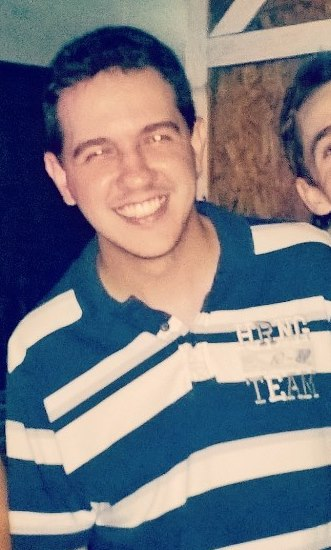

Rodolfo Francisco Pinto
Avenida Augusto de Lima, nº 1.674, Apartamento 1608, Barro Preto, Belo Horizonte-MG, CEP: 30190-003
E-mail: rodolfofrancisco1990@gmail.com
Celular: (31) 9290-6370
Brasileiro
23 anos
Solteiro

Avenida Augusto de Lima, nº 1.674, Apartamento 1608, Barro Preto, Belo Horizonte-MG, CEP: 30190-003
E-mail: rodolfofrancisco1990@gmail.com
Celular: (31) 9290-6370
Brasileiro
23 anos
Solteiro
Atuar como analista desenvolvedor Web.